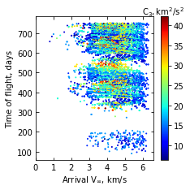
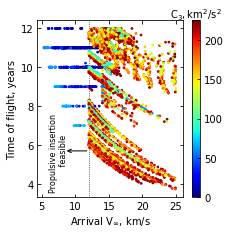
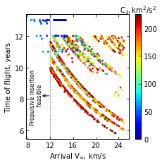

02 - Interplanetary Trajectories¶
[1]:
import pandas as pd
import numpy as np
import matplotlib.pyplot as plt
from matplotlib import rcParams
[2]:
V1 = pd.read_excel('../interplanetary-data/Venus/venus-trajectories.xlsx', sheet_name='Delta IV Heavy')
LINF = V1['Launch Vinf'].values
LC3 = LINF**2.0
VINF = V1['Arrival Vinf'].values
TOF = V1['ToF'].values
fig = plt.figure()
fig.set_size_inches([3.25,3.25])
rcParams['font.family'] = 'sans-serif'
rcParams['font.sans-serif'] = ['DejaVu Sans']
params = {'mathtext.default': 'regular' }
plt.rcParams.update(params)
plt.scatter(VINF, TOF, c=LC3, cmap='jet',vmin=LC3.min(), vmax=LC3.max(), s=1.0)
cbar= plt.colorbar()
cbar.ax.tick_params(labelsize=10)
cbar.set_label(r'$C_3, km^2/s^2$', labelpad=-25, y=1.08, rotation=0, fontsize=10)
#plt.grid(True,linestyle='dotted', linewidth=0.1)
plt.xlabel("Arrival "+r'$V_\infty$'+r', km/s' ,fontsize=10)
plt.ylabel('Time of flight, days', fontsize=10)
plt.xticks(np.array([ 0, 1, 2, 3, 4, 5, 6]),fontsize=10)
plt.yticks(fontsize=10)
#plt.title('Delivered Mass Fraction to Orbit',fontsize=20)
ax = plt.gca()
ax.tick_params(direction='in')
ax.yaxis.set_ticks_position('both')
ax.xaxis.set_ticks_position('both')
#ax.legend(markerscale=3,loc='upper left', fontsize=16)
plt.savefig('../plots/venus-int.png',bbox_inches='tight')
plt.savefig('../plots/venus-int.pdf', dpi=300,bbox_inches='tight')
plt.savefig('../plots/venus-int.eps', dpi=300,bbox_inches='tight')
plt.show()
C:\Users\AthulGirija\anaconda3\envs\env1\lib\site-packages\openpyxl\worksheet\_reader.py:312: UserWarning: Unknown extension is not supported and will be removed
warn(msg)

[12]:
U1 = pd.read_excel('../interplanetary-data/Uranus/U1.xlsx', sheet_name='Sheet1')
U2 = pd.read_excel('../interplanetary-data/Uranus/U2.xlsx', sheet_name='Sheet1')
U3 = pd.read_excel('../interplanetary-data/Uranus/U3.xlsx', sheet_name='Sheet1')
U4 = pd.read_excel('../interplanetary-data/Uranus/U4.xlsx', sheet_name='Sheet1')
U5 = pd.read_excel('../interplanetary-data/Uranus/Uranus.xlsx', sheet_name='Uranus')
U6 = pd.read_excel('../interplanetary-data/Uranus/uranus-chem.xlsx', sheet_name='uranus-chem')
U7 = pd.read_excel('../interplanetary-data/Uranus/uranus-sep-deltaIVH.xlsx', sheet_name='uranus-sep-deltaIVH')
TOF1 = U1['Atof'].values/365.0
TOF2 = U2['Atof'].values/365.0
TOF3 = U3['Atof'].values/365.0
TOF4 = U4['Atof'].values/365.0
TOF5 = U5['TOF'].values
TOF6 = U6['TOF'].values
TOF7 = U7['TOF'].values
VINF1 = U1['Avinf'].values
VINF2 = U2['Avinf'].values
VINF3 = U3['Avinf'].values
VINF4 = U4['Avinf'].values
VINF5 = U5['ArrVinf_mag'].values
VINF6 = U6['Arrival_Vinf'].values
VINF7 = U7['Arrival_Vinf'].values
LC31 = U1['LC3'].values
LC32 = U2['LC3'].values
LC33 = U3['LC3'].values
LC34 = U4['LC3'].values
LC35 = U5['C3'].values
LC36 = U6['C3'].values
LC37 = U7['C3'].values
TOF = np.concatenate((TOF1, TOF2, TOF3, TOF4, np.array([TOF5[i] for i in range(0,len(TOF5),5)]), TOF6, TOF7),axis=0)
VINF = np.concatenate((VINF1, VINF2, VINF3, VINF4, np.array([VINF5[i] for i in range(0,len(VINF5),5)]), VINF6, VINF7),axis=0)
LC3 = np.concatenate((LC31,LC32,LC33,LC34, np.array([LC35[i] for i in range(0,len(LC35),5)]),LC36, LC37),axis=0)
fig = plt.figure()
fig.set_size_inches([3.25,3.25])
rcParams['font.family'] = 'sans-serif'
rcParams['font.sans-serif'] = ['DejaVu Sans']
params = {'mathtext.default': 'regular' }
plt.rcParams.update(params)
plt.scatter(VINF, TOF, c=LC3, cmap='jet',vmin=0, vmax=LC3.max(), zorder=10, s=3.0)
cbar = plt.colorbar()
cbar.ax.tick_params(labelsize=10)
cbar.set_label(r'$C_3, km^2/s^2$', labelpad=-27, y=1.08, rotation=0, fontsize=10)
cbar.ax.tick_params(axis='y', direction='in')
plt.axvline(x=12.0, linestyle='dotted', linewidth=0.7, color='black')
plt.text(7.5, 5.7, 'Propulsive insertion \n feasible' , fontsize=8, ha='center', va='center', rotation=90)
ax = plt.gca()
ax.annotate('',
xy=(12.0, 5.7) ,
xytext=(8.4, 5.7),
arrowprops=dict(arrowstyle="<-"), va="center", ha="center", fontsize=9)
ax.tick_params(direction='in')
ax.yaxis.set_ticks_position('both')
ax.xaxis.set_ticks_position('both')
ax.set_ylabel("Time of flight, years" ,fontsize=10)
ax.set_xlabel("Arrival "+r'$V_{\infty}$'+', km/s',fontsize=10)
ax.set_xticks(np.arange(5, 26, step=5))
ax.set_yticks(np.arange(4, 13, step=2))
ax.tick_params(axis='x',labelsize=10)
ax.tick_params(axis='y',labelsize=10)
plt.savefig('../plots/uranus-int.png',bbox_inches='tight')
plt.savefig('../plots/uranus-int.pdf', dpi=300,bbox_inches='tight')
plt.savefig('../plots/uranus-int.eps', dpi=300,bbox_inches='tight')
plt.show()

[14]:
U1 = pd.read_excel('../interplanetary-data/Neptune/N1.xlsx', sheet_name='Sheet1')
U2 = pd.read_excel('../interplanetary-data/Neptune/N2.xlsx', sheet_name='Sheet1')
U3 = pd.read_excel('../interplanetary-data/Neptune/N3.xlsx', sheet_name='Sheet1')
U4 = pd.read_excel('../interplanetary-data/Neptune/N4.xlsx', sheet_name='Sheet1')
U5 = pd.read_excel('../interplanetary-data/Neptune/Neptune.xlsx', sheet_name='Neptune')
U6 = pd.read_excel('../interplanetary-data/Neptune/neptune-chem.xlsx', sheet_name='neptune-chem')
U7 = pd.read_excel('../interplanetary-data/Neptune/neptune-sep-deltaIVH.xlsx', sheet_name='neptune-sep-deltaIVH')
TOF1 = U1['Atof'].values/365.0
TOF2 = U2['Atof'].values/365.0
TOF3 = U3['Atof'].values/365.0
TOF4 = U4['Atof'].values/365.0
TOF5 = U5['TOF'].values
TOF6 = U6['TOF'].values
TOF7 = U7['TOF'].values
VINF1 = U1['Avinf'].values
VINF2 = U2['Avinf'].values
VINF3 = U3['Avinf'].values
VINF4 = U4['Avinf'].values
VINF5 = U5['ArrVinf_mag'].values
VINF6 = U6['Arrival_Vinf'].values
VINF7 = U7['Arrival_Vinf'].values
LC31 = U1['LC3'].values
LC32 = U2['LC3'].values
LC33 = U3['LC3'].values
LC34 = U4['LC3'].values
LC35 = U5['C3'].values
LC36 = U6['C3'].values
LC37 = U7['C3'].values
TOF = np.concatenate((TOF1, TOF2, TOF3, TOF4, np.array([TOF5[i] for i in range(0,len(TOF5),5)]), TOF6, TOF7),axis=0)
VINF = np.concatenate((VINF1, VINF2, VINF3, VINF4, np.array([VINF5[i] for i in range(0,len(VINF5),5)]), VINF6, VINF7),axis=0)
LC3 = np.concatenate((LC31,LC32,LC33,LC34, np.array([LC35[i] for i in range(0,len(LC35),5)]),LC36, LC37),axis=0)
fig = plt.figure()
fig.set_size_inches([3.25,3.25])
rcParams['font.family'] = 'sans-serif'
rcParams['font.sans-serif'] = ['DejaVu Sans']
params = {'mathtext.default': 'regular' }
plt.rcParams.update(params)
plt.scatter(VINF, TOF, c=LC3, cmap='jet',vmin=0, vmax=LC3.max(), zorder=10, s=3.0)
cbar = plt.colorbar()
cbar.ax.tick_params(labelsize=10)
cbar.set_label(r'$C_3, km^2/s^2$', labelpad=-27, y=1.08, rotation=0, fontsize=10)
cbar.ax.tick_params(axis='y', direction='in')
plt.axvline(x=12.0, linestyle='dotted', linewidth=0.7, color='black')
plt.text(9.5, 8.2,
'Propulsive insertion \n feasible' ,
fontsize=8, ha='center', va='center', rotation=90)
ax = plt.gca()
ax.annotate('',
xy=(12.0, 8.2) ,
xytext=(10.3, 8.2),
arrowprops=dict(arrowstyle="<-"), va="center", ha="center", fontsize=9)
ax.tick_params(direction='in')
ax.yaxis.set_ticks_position('both')
ax.xaxis.set_ticks_position('both')
ax.set_ylabel("Time of flight, years" ,fontsize=10)
ax.set_xlabel("Arrival "+r'$V_{\infty}$'+', km/s',fontsize=10)
ax.set_xticks(np.arange(8, 26, step=4))
ax.set_yticks(np.arange(6, 13, step=2))
ax.tick_params(axis='x',labelsize=10)
ax.tick_params(axis='y',labelsize=10)
plt.savefig('../plots/neptune-int.png',bbox_inches='tight')
plt.savefig('../plots/neptune-int.pdf', dpi=300,bbox_inches='tight')
plt.savefig('../plots/neptune-int.eps', dpi=300,bbox_inches='tight')

[ ]: